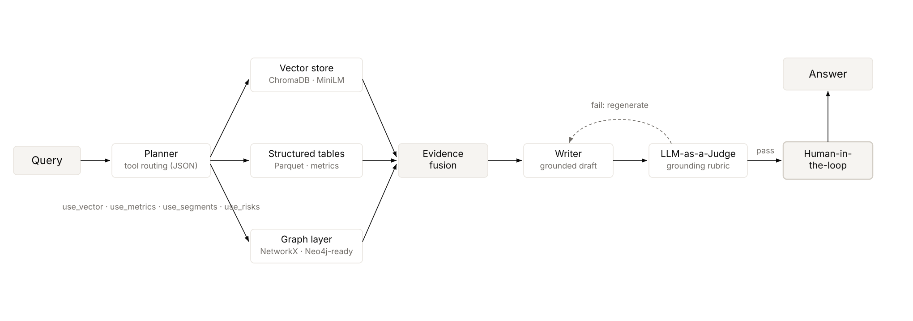

Combining vector retrieval, knowledge graphs, and agentic planning to improve financial due-diligence workflows.
Earnings calls are core inputs for institutional due diligence, but each transcript can span 50 to 300 pages and mix executive narratives, analyst Q&A, and structured tables. Analysts need high-confidence answers quickly across firms and quarters.
The central product decision was whether retrieval could move beyond chunk relevance into reliable, evidence-grounded financial reasoning for summaries, Q&A, and peer comparisons.
Answer targeted call questions with grounded transcript and metric evidence.
Compare guidance, risk posture, and key metric movements against prior periods.
Contrast companies in the same period without inventing unsupported numeric claims.
Retrieval-only systems can fetch relevant snippets, but often fail to combine semantic, numeric, and relational evidence into one coherent answer path.
Top chunks capture local semantics but miss cross-document and cross-quarter structure.
Without table retrieval, generated outputs drift on values and temporal attribution.
Single-pass retrieval cannot adapt to whether a question needs metrics, risks, or transcript tone.
Three evidence layers were integrated to support semantic retrieval and symbolic reasoning in one pipeline.
The pipeline runs as a LangGraph-style agentic loop. A planner model selects tools per query and returns a JSON policy (use_vector_search, use_metrics, use_segments, use_risks, plus vector_query). Retrieved evidence is fused into one JSON blob and passed to the response model with explicit grounding instructions, then handed to an LLM-as-a-judge critic before anything reaches the analyst.

The agentic loop: a research agent gathers grounded context from document and live-data sources, a writer drafts, and an LLM-as-a-judge critic critiques and regenerates until the draft clears the rubric, with a human-in-the-loop checkpoint before anything ships.
Intent-aware retrieval selection with safe fallback to all-tools mode when planner output is invalid.
Combines transcript snippets, metrics, segment data, and risk rows into a single context package.
Scores each answer against a grounding, relevance, and completeness rubric, and regenerates any draft that fails until it clears the bar.
Low temperature and explicit prompts to avoid guessing numbers when data is absent.
The same critic-and-regenerate philosophy behind my agentic compliance work: a judge model enforces the rubric at generation time rather than trusting a single pass, so weak or ungrounded answers are caught and rewritten before an analyst ever sees them.
Each answer is scored by the LLM-as-a-judge critic on the rubric below. The critic held ~88% agreement with human reviewers on pass/fail, and its regenerate-on-fail loop raised the share of answers clearing the grounding bar from 62% on the first pass to 91%. Tone and guidance synthesis were strong; strict numeric and temporal fact alignment remained the hardest case.
A sample of the critic's per-answer rubric scores:
| Case | Overall | Relevance | Factual | Grounded | Complete | Clear |
|---|---|---|---|---|---|---|
| Tone and guidance | 1.0 | 1.0 | 1.0 | 1.0 | 1.0 | 1.0 |
| Risk relevance | 0.1 | 1.0 | 0.0 | 0.0 | 0.2 | 1.0 |
Numeric grounding and quarter attribution remain the dominant error source in difficult queries.
Use the system for exploratory analysis, summaries, and benchmarking, while requiring citation validation and confidence checks before high-stakes numeric decisions.